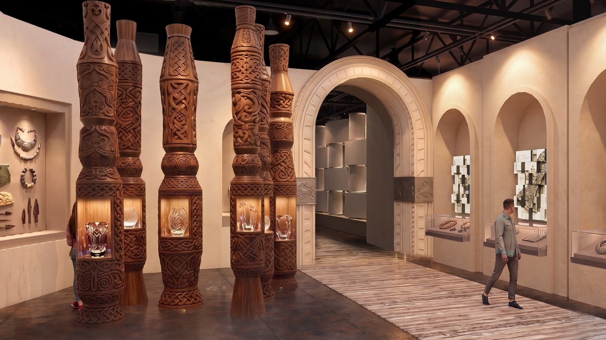

Текст слайда
От впечатления — к путешествию. От концепции — к согласованному производству.
Пакет к обсуждению • 19 ноября 2026 • переписка по 17 ноябряНАЦИОНАЛЬНЫЙ ЦЕНТР «РОССИЯ» / 2027
От впечатления — к путешествию.
От концепции — к реализации.
Материалы к обсуждению с Вячеславом Куделиным и Павлом Дорошенко.
Открыть пакет ↓Выпуск 19.11.2026 · переписка по 17.11.2026

01 / ПАКЕТ К ВСТРЕЧЕ
Согласованное отделено от предложений. Для открытых вопросов указаны варианты и участники, от которых зависит решение.
02 / ПРЕЗЕНТАЦИЯ
Нажмите на слайд для крупного просмотра. В режиме показа работают стрелки клавиатуры и Escape.
03 / РЕЕСТР
«Открыто» означает: подтверждение не найдено в доступной переписке. Указанные функции не заменяют договорное распределение работ.
Основание Вячеслав: «Ок», 09.11
Ответственные Елена / дизайнеры; подрядчик
Следующее действие Внести в АР, визуализации и расчёт.
Основание Вячеслав, 09.11 / 25.10
Ответственные Елена; техническая команда
Следующее действие Обновить чертежи, оснащение, смету.
Основание 03.11 / список 07.11
Ответственные Андрей → Вячеслав
Следующее действие Подтвердить шесть позиций; затем задания на каждую.
Основание Запрос выбора 05.11
Ответственные Роман + Елена → Вячеслав
Следующее действие Выбрать один вариант; закрепить выдачу билетов и проходы.
Основание 28.10; задержка 09.11
Ответственные Елена → Вячеслав
Следующее действие Согласовать образец и объём до следующей визуализации.
Основание Запрос брейншторма 10.11
Ответственные Андрей, Сергей, Саня, @vusalcor
Следующее действие Назначить владельца; схема и простой прототип до производства.
Основание 12.11; схема 17.11
Ответственные Дорошенко: содержание; Вячеслав: исполнение
Следующее действие Определить носитель, поставку, оплату, контент и обновление.
Основание 26.10; пакет 17.11
Ответственные Елена + Роман → Дорошенко
Следующее действие Согласовать доработки; разрешение сдать документ не отменяет замечаний.
Основание Предварительный пакет 16.11 / отправка 17.11
Ответственные Роман + Елена → Дорошенко
Следующее действие Закрепить вклад, права, ответственного и сроки в региональном ТЗ.
Основание 15.10 принято; 28.10 сметы задержаны
Ответственные Подрядчики; Роман сверяет; Вячеслав решает
Следующее действие Получить VARS, пересчитать замены, назначить владельца сводной сметы.
Основание Оптимизация 25.10–03.11
Ответственные Вячеслав; подрядчики
Следующее действие Утвердить по одной актуальной ведомости; общей суммы в чате нет.
Основание Закреплено 15.10 / пакет 16.11
Ответственные Вячеслав + Дорошенко
Следующее действие Подтвердить календарь до внешней рассылки.
* Отмеченные варианты предложены для обсуждения. Ответственных за сводную смету, интеграцию и прототип лямки ещё нужно назначить.
04 / ОСНОВАНИЯ
Предварительные документы и история решений. Отправка документа на обсуждение не означает его утверждения.